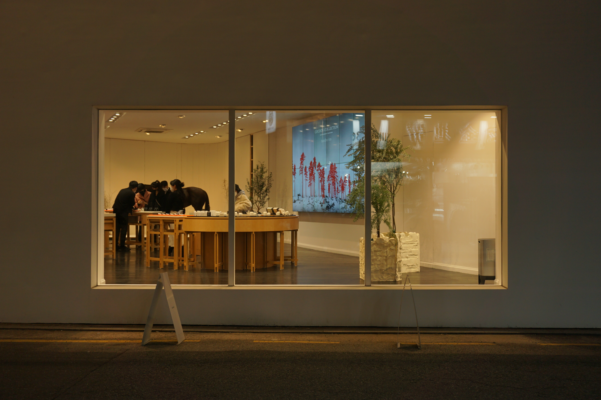
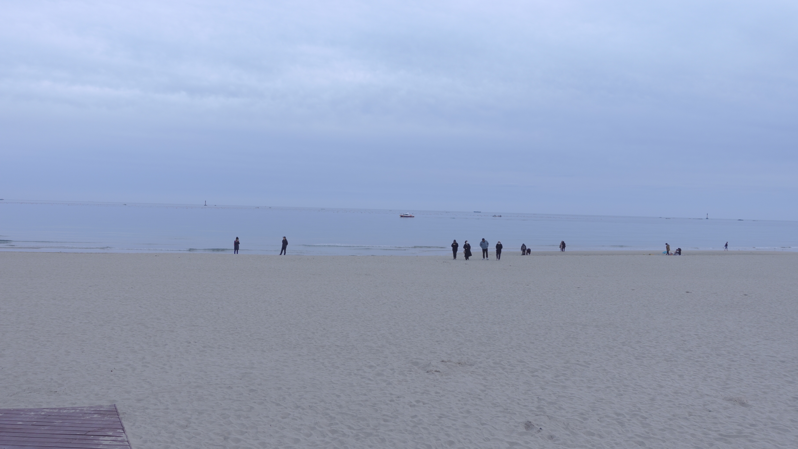
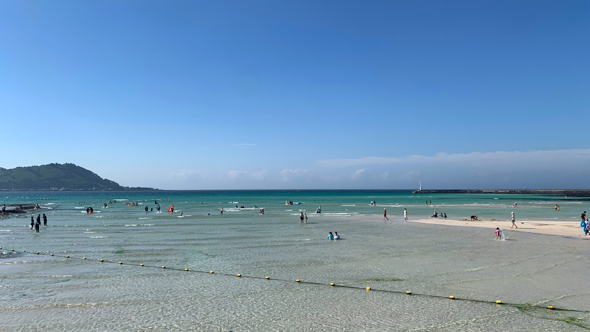

안녕하세요 뚜벅님들
오늘 하루도 열심히 걸어다니셨나요? 발바닥에게 수고했다는 한마디 부탁드려요.
제가 산책하면서 본 여러 것들을 공유할게요. 즐겁게 봐주세요.
⁎
한강에서 뚜벅서울살이 초반엔 한강을 자주 갔다.
같은 대한민국이라, 이곳이 전에 살던곳과 많이 다르지 않아 서울임이 실감이 나지 않았던 참이였다.
그래서인지 서울하면 대표적으로 떠오르는 곳 중 하나인 한강에 가면 제법 서울이라는 것이
느껴졌다. 게다가 항상 맞은편에 남산타워까지 보였다.
⁎
산책에서 뚜벅막 걸어다니는 것을 좋아하는데 아무생각 없이 가다보면 우연히 멋진 장소를 마주칠 때가 있다.
그것은 자연 속이기도 도시 한복판이기도 하다. 
⁎
카페에서 뚜벅이런 저런 카페를 자주 다닌다. 기억에 남는 곳이 카페만디라는 부산에 있는 카페이다.
넓은 창이 있고 산이 보이는데 여름에 가면 풀이 자라나서 뷰가 참 좋다. 인테리어도 옛 가옥을 리모델링하여
뭔가 숲속의 저택같은 st라 힐링하기 좋았다.


⁎
바다에서 뚜벅넓게 뚫린 풍경을 보면 기분 좋은 멍을 때리게 된다.
물을 좋아해서 바다를 좋아한다.
마시는 물도 좋고 헤엄치는 물도 좋다.  